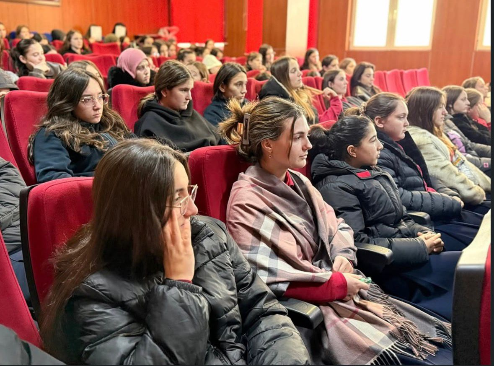
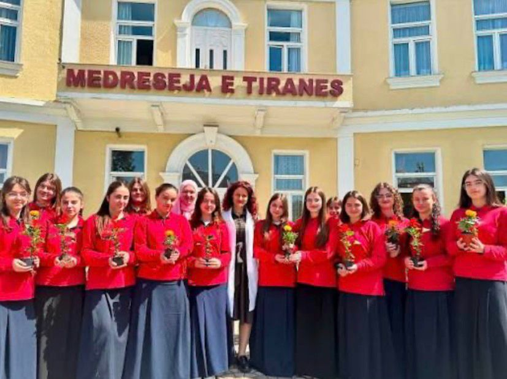

Kthehu në faqen kryesore
![Medreseja e Tiranës ka një pamje të jashtme të thjeshtë, por elegante dhe domethënëse. Ndërtesa karakterizohet nga arkitekturë moderne me elementë tradicionalë islamikë. Fasada është zakonisht e rregullt dhe e pastër, me ngjyra të hapura që i japin një pamje të qetë dhe serioze. Dritaret janë të mëdha dhe të vendosura në mënyrë simetrike, duke lejuar ndriçim të bollshëm natyror.
Në hyrje bie në sy një ambient i sistemuar mirë, shpesh i rrethuar me gjelbërim dhe hapësira të pastra, që krijojnë një atmosferë mikpritëse dhe edukative. E gjithë pamja e jashtme reflekton disiplinë, qetësi dhe një frymë institucionale të përkushtuar ndaj arsimit dhe vlerave.](shkolla.jpeg)